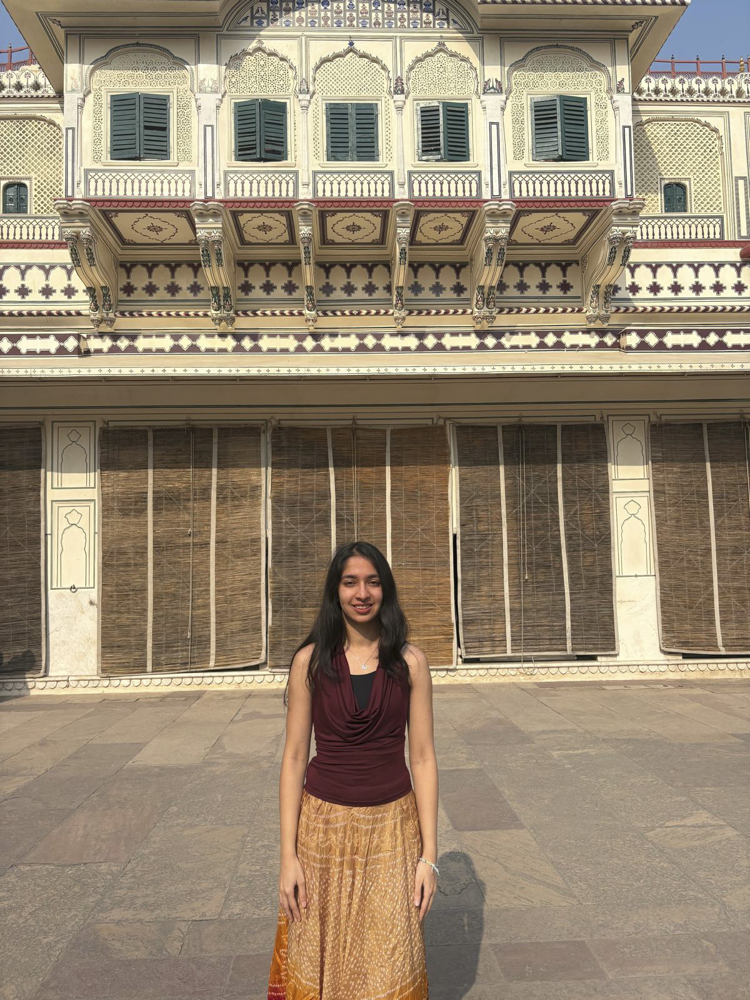

00 — Introduction
Hello, I'm Disha

I am an incoming ML PhD at GeorgiaTech. Previously, I worked as a software engineer at Amazon. I graduated from Purdue University in May 2025 with a B.S in Computer Engineering and a minor in Mathematics. My interdisciplinary education spans AI, Computer Graphics, Embedded Systems, Chip Design, and Software Engineering, equipping me with skills to tackle multidisciplinary problems.
I welcome every opportunity to connect and network, so feel free to reach out!
01 — Work Experience
Where I've Worked
Amazon
- Worked on feature computation platform integral for fraud detection pipeline — a Java-based service handling 147.7M feature computations/sec worldwide and a Python-based service handling 2.25M TPS with p99 latency of 20–80ms.
- Led critical end-to-end security migration for multiple services, migrating from insecure HTTP to CloudAuth-enabled HTTPS as part of 100% encryption-in-transit compliance for Tier-1 services.
- Set up new service cells and infrastructure in multiple AWS regions for Shadow Testing during service and datacenter migrations.
- Performed on-call duties managing incident escalation, root cause analysis, and high-traffic scaling operations for major shopping events.
- Enabled secure database calls by passing auth tokens from incoming requests through the request context.
Amazon
- Implemented and deployed a scalable authentication pipeline in the cloud using AWS for a Java-based service.
- Built an S3 interface to fetch authentication data periodically, designed an in-memory auth refresher for comparison, and implemented caching.
02 — Research
Academic Work
Bayesian Deep Learning
I developed SDSI, a variational inference framework that restricts posterior variances to a sparse, low-dimensional subspace, enabling scalable Bayesian neural networks with improved efficiency. The method introduces a subspace addition strategy that preserves high-gradient directions, resulting in enhanced predictive accuracy and calibration across both clean and corrupted datasets.
SDSI achieved 76.36% accuracy, 0.9655 AUROC, and 0.0014 ECE on CIFAR-100 (10% subnet), outperforming Sparse BNNs, VBLL approaches, and Laplace Subnetworks. The framework reaches full BNN-level predictive performance in only 40 training epochs.
Continual Learning
"[Re] BiRT: Bio-Inspired Replay in Vision Transformers"
I conducted a reproducibility study on BiRT, a continual learning framework that leverages vision transformers with constructive noise and episodic memory replay to mitigate catastrophic forgetting. The project involved re-implementing the method, evaluating performance across multiple benchmarks, and analyzing the robustness and practical applicability of the approach. Published in ReScience C.
Special thanks to Jinen Setpal and ML@Purdue for their support and resources.
Neuromorphic Computing
"An FPGA-Based Neuromorphic Processor with All-to-All Connectivity"
I developed a preliminary implementation of an FPGA-based neuromorphic processor featuring all-to-all connectivity on an Artix-7 FPGA. Implemented Spiking Neural Networks (SNNs) in Verilog on the Basys3 board using Xilinx Vivado, validated architecture on algorithmic test cases, and designed custom IP modules including UART transceivers, receivers, and FIFO buffers at 9600 bps.

Semiconductor Fabrication
I worked inside the Birck Nano Center's ISO-class cleanroom to manufacture MOSCAPs with end-to-end semiconductor process integration. Performed thin-film deposition (ALD, PVD sputtering, e-beam evaporation), photolithography patterning, reactive-ion etching, wafer thinning, and electrical characterization. Analyzed dielectric properties of HfO₂ gate oxides through IV and CV measurements.